| 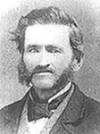 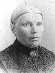 |
Lévis-Louis Provost décède à l'âge de 69 ans. Naissance le 4 juin 1823 à St-Charles, cté Bellechasse Parrain Louis Fournier, marraine Marguerite Gosselin. Décès le 27 mars 1893 à St-Gervais, cté Bellechasse Après leur mariage, ils allèrent demeurer à St-Vital de Lampton, cté de Frontenac. Après 5 ans, ils revinrent demeurer à St-Gervais où ils fixèrent leur demeure dans le rang "Bras". Père: Charles Provost Mère: Louise Gosselin Mariage le 19 février 1849 à St-Gervais, cté Bellechasse Épouse: Rose-Délima Guillemette décède à l'âge de 65 ans. Naissance 12 juillet 1831 à St-Gervais, cté Bellechasse Dite "Rose". Parrain Pierre Guillemette, marraine Josette Campeau son épouse, ses grand-parents. Décès le 11 mai 1897 à Ste-Rose de Watford, cté Dorchester Décède chez son fils Pierre-King. Père: Pierre Guillemette Mère: Thérèse Rousseau |
| 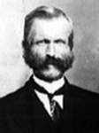 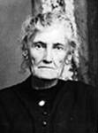 |
Enfant 1 Louis-Firmin Provost décède à l'âge de 78 ans. Naissance le 18 février 1850 à St-Vital de Lampton, cté Frontenac. Décès le 4 janvier 1929 à St-Émile de Légal, Alb. (ses ancêtres) Mariage le 19 juillet 1876 à St-Gervais, cté Bellechasse. Conjointe: Marie-Apoline Nolin décède à l'âge de 83 ans. Naissance en avril 1849 à St-Gervais, cté Bellechasse. Décès le 23 décembre 1932 à Picardville, Alb. (sa famille) |
| 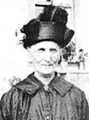 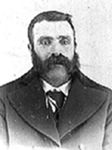 |
Enfant 5 Marie Provost décède à l'âge de 87 ans. Naissance le 8 novembre 1856 à St-Gervais, cté Bellechasse Parrain Pierre Pouliot un voisin, marraine sa tante Apolline Guillemette. Décès le 17 janvier 1944 à St-Damien-de-Buckland, cté Bellechasse Mariage le 10 janvier 1882 à St-Gervais, cté Bellechasse Conjoint: Pierre Turcotte n. en 1858 d. 29 mai 1941 Père: Gabriel Turcotte Mère: Marguerite Fradette Ils demeurèrent à Ste-Rose de Watford près de l'église. Ils eurent 8 enfants, 5 filles et 3 gas. |
| 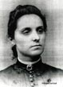
|
Enfant 7 Malvina Provost décède à l'âge de 35 ans. Naissance le 15 juin 1861 à St-Gervais, cté Bellechasse Parrain Abraham Turgeon 3ième voisin, marraine sa cousine Marie Audet. Décès le 18 mars 1897 à Ste-Rose de Watford, cté Dorchester Mariage le 15 août 1881 à Roschester, NH. USA Conjoint: Edouard Preston n. en 1857 d. 11 fév 1884 Père: Edouard Preston Ils eurent 2 enfants, 2 gas. |
| 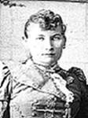 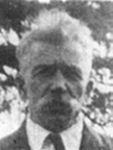 |
Enfant 10 Anna Provost décède à l'âge de 31 ans. Naissance le 15 juin 1867 à St-Gervais, cté Bellechasse Décès le 6 décembre 1898 à Ste-Rose de Watford, cté Dorchester Mariage le 25 avril 1892 à La-Nativité-de-la-Ste-Vierge de Montréal (Hochelaga) Conjoint: Alphonse Fournier n. en septembre 1867, d. 7 mai 1942. Père: Édouard-Edmond Fournier Mère: Élisabeth Viens Ils eurent 4 enfants, 2 filles et 2 gas. |
|
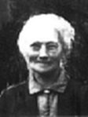 |
Enfant 11 Léda Provost décède à l'âge de 61 ans. Naissance le 7 février 1869 à St-Gervais, cté Bellechasse Parrain son frère Firmin, marraine sa soeur Eulalie. Décès le 1er février 1930 à St-Peter de Villeneuve, AB. Mariage le 9 février 1891 à Notre-Dame de Montréal Conjoint: Adélard Ouimet n. le 1er février 1856, d. 13 juillet 1920. Père: Félix Ouimet Mère: Mary Lonergan Le 1er mai 1892 ils allèrent demeurer à St-Peter de Villeneuve, Alberta, où ils s'achetèrent une ferme à blé. Ils eurent 16 enfants, 10 filles et 6 gas. |
| 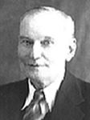 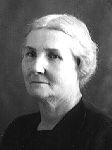 |
Enfant 12 Pierre-Onésime-King Provost décède à l'âge de 78 ans. Naissance le 19 septembre 1871 à St-Gervais, cté Bellechasse Dit "Pierre-King". Parrain Théophile Bilodeau, marraine Marie Breton son épouse. Décès le 6 avril 1950 à St-Georges, cté Beauce Mariage le 19 août 1895 à Ste-Claire, cté Dorchester Conjointe: Délina Nadeau n. 8 décembre 1870, d. 15 janvier 1956. Père: Narcisse Nadeau Mère: Agnès Fournier Après avoir tenu magasin pendant 27 ans à Ste-Rose de Watford, le 12 septembre 1922 il alla demeurer à St-Georges de Beauce. Ils eurent 9 enfants, 3 filles et 6 gas. |
| 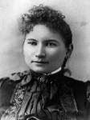 |
Enfant 13 Victoria Provost décède à l'âge de 31 ans. Naissance le 18 mars 1873 à St-Gervais, cté Bellechasse Parrain Joseph Guillemette, marraine Marie Labonté son épouse, résidants à Notre-Dame de Lévis, son oncle et sa tante. Décès le 22 janvier 1905 à Montréal. Mariage le 27 octobre 1890 à Notre-Dame de Montréal Conjoint: Alcide-Archille Brisebois n. en 1859 d. en août 1944 Père: Alexandre Brisebois Mère: Célanire Lavigne Ils eurent 3 enfants, 2 filles et 1 gas. |
| Page précédente | Page des ancêtres |